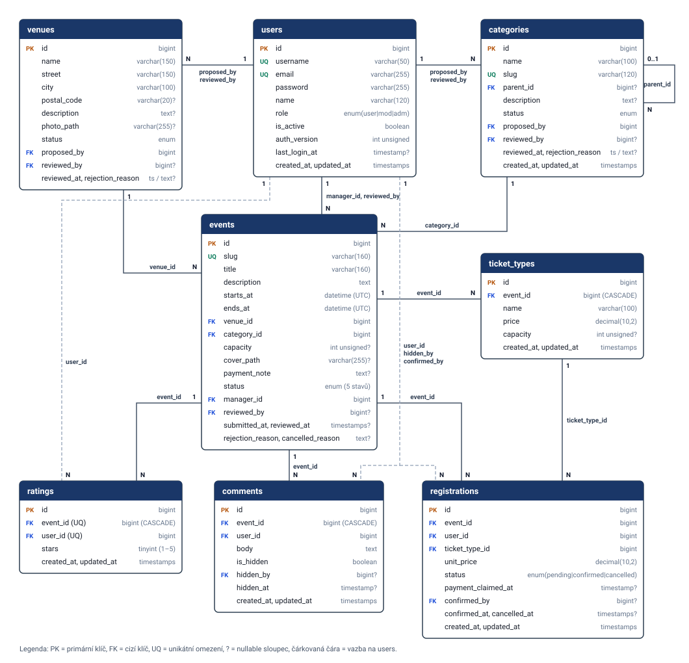

V systému jsou přes DatabaseSeeder připraveny účty pro všechny role uživatelů
(přihlásit se lze uživatelským jménem i e-mailem):
| Login | Heslo | Role | |
|---|---|---|---|
admin |
admin@iis.local |
Admin1234! |
Administrátor |
moderator |
moderator@iis.local |
Mod1234! |
Moderátor |
petr |
petr@iis.local |
User1234! |
Registrovaný uživatel (správce událostí i účastník) |
jana |
jana@iis.local |
User1234! |
Registrovaný uživatel (účastník i správce událostí) |
(Diagram případů užití není přiložen, protože systém implementuje role a případy užití definované zadáním.)
Odkaz na komentované video demonstrující použití aplikace: (doplnit odkaz na video před odevzdáním)
Aplikace je postavena na serverové MVC architektuře frameworku Laravel 10 (PHP 8.1+) s
renderováním pohledů v šablonách Blade a přístupem k databázi přes Eloquent ORM.
Složitější doménová a transakční logika je oddělena do servisní vrstvy app/Services/ a oprávnění
hlídají vlastní middleware v app/Http/Middleware/.
| Případ užití | Routy (routes/web.php) |
Controller / Service / Middleware | Šablony (resources/views/) |
|---|---|---|---|
| Úvodní stránka a rychlé vyhledávání | GET / |
HomeController |
home.blade.php |
Registrace, přihlášení, odhlášení, timeout relace (30 min) a auth_version |
GET/POST /registrace, GET/POST /prihlaseni, POST /odhlaseni |
AuthController, EnsureSessionIsValid |
auth/register.blade.php, auth/login.blade.php |
| Úprava vlastního profilu a změna hesla | GET/POST /profil, POST /profil/heslo |
ProfileController |
profile/edit.blade.php |
| Administrace uživatelů a rolí (přidání, úprava, reset hesla, aktivace/deaktivace, mazání) | /admin/uzivatele/* |
AdminUserController, RequireRole |
admin/users/index.blade.php, admin/users/form.blade.php |
| Veřejný katalog událostí, filtrování (včetně podkategorií) a detail události | GET /udalosti, GET /udalosti/{slug} |
EventController, CategoryService |
events/index.blade.php, events/show.blade.php |
| Zakládání, úpravy, odeslání ke schválení a zrušení události + správa typů vstupného | GET /moje-udalosti, GET/POST /udalosti/nova,
/udalosti/{event}/upravit|odeslat|zrusit |
EventController, EventService, ImageUploadService |
events/mine.blade.php, events/form.blade.php |
| Registrace na událost (transakční kontrola kapacity), zrušení, hlášení a potvrzení úhrady | POST /udalosti/{slug}/registrace, GET /moje-registrace,
GET /udalosti/{event}/ucastnici,
POST /registrace/{registration}/zrusit|uhrazeno|potvrdit|odmitnout |
RegistrationController, RegistrationService |
registrations/index.blade.php, registrations/participants.blade.php |
Osobní kalendář, export do .ics (RFC 5545) a odkaz do Google kalendáře |
GET /muj-kalendar, GET /muj-kalendar.ics |
CalendarController, IcsService, EventController |
calendar/index.blade.php |
| Hodnocení (1–5 hvězdiček) a komentáře po skončení události | POST /udalosti/{slug}/hodnoceni, POST /udalosti/{slug}/komentar,
POST /komentare/{comment}/smazat |
FeedbackController |
events/show.blade.php |
| Katalog míst konání, návrh nového místa s fotkou a přehled mých návrhů | GET /mista, GET /mista/{venue}, GET/POST /mista/navrhnout,
GET /moje-navrhy |
VenueController, ImageUploadService |
venues/*.blade.php, proposals/index.blade.php |
| Hierarchické kategorie (strom až 4 úrovně) a návrh nové kategorie | GET /kategorie, GET/POST /kategorie/navrhnout |
CategoryController, CategoryService |
categories/*.blade.php |
| Moderace událostí a upozornění na kolizi místa a času | /moderace/udalosti/* |
ModerationEventController, EventService, RequireRole |
moderation/events/index.blade.php, moderation/events/show.blade.php |
| Moderace a správa míst konání | /moderace/mista/* |
ModerationVenueController, ImageUploadService, RequireRole |
moderation/venues/index.blade.php, moderation/venues/form.blade.php |
| Moderace a správa kategorií | /moderace/kategorie/* |
ModerationCategoryController, CategoryService, RequireRole |
moderation/categories/index.blade.php, moderation/categories/form.blade.php
|
| Moderace komentářů (skrývání / zobrazení) | /moderace/komentare/* |
ModerationCommentController, RequireRole |
moderation/comments/index.blade.php |
Klíčové aplikační a bezpečnostní mechanismy:
RegistrationService::register()
probíhá uvnitř databázové transakce se zámkem lockForUpdate() nad událostí i typem vstupného,
aby nedošlo k přeplnění při souběžných požadavcích.CategoryService kontroluje schválení rodiče, zabraňuje tvorbě
cyklů, vynucuje maximální hloubku 4 úrovně a při filtrování událostí vrací všechny podkategorie zvolené
větve.EnsureSessionIsValid odhlásí uživatele po 30 minutách
nečinnosti a kontroluje sloupec auth_version (změna role, hesla nebo deaktivace účtu okamžitě
zneplatní existující relace).public/uploads/.htaccess zakazuje spouštění PHP skriptů..ics.
Relační schéma je definováno migracemi v database/migrations/ a tvoří jej 8 aplikačních tabulek
(users, venues, categories, events,
ticket_types, registrations, ratings, comments) s cizími
klíči, indexy a unikátními omezeními.
Časy událostí se ukládají v UTC a v uživatelském rozhraní se zobrazují v zóně Europe/Prague.

Softwarové požadavky a použité knihovny třetích stran:
8.1+ s rozšířeními pdo_mysql, gd, zip,
mbstring, openssl8.0+ nebo MariaDB 10.6+ (InnoDB, kódování
utf8mb4)laravel/framework 10.50.4, laravel/sanctum 3.3.3,
guzzlehttp/guzzle 7.16.35.3.3 (uložen lokálně v public/assets/vendor/), čistý
JavaScript (ověřeno v Chrome a Firefox)phpunit/phpunit 10.5.67, fakerphp/faker 1.24.1Postup rozbalení, konfigurace a inicializace databáze:
unzip xdudekl00.zip -d ~/iis-app
cd ~/iis-app
composer install --no-dev --optimize-autoloader
cp .env.example .env
php83 artisan key:generate --forceV souboru .env nastavte připojení k produkční MySQL/MariaDB databázi a URL aplikace (na serveru Eva
včetně socketu DB_SOCKET):
APP_ENV=production
APP_DEBUG=false
APP_URL=http://www.stud.fit.vutbr.cz/~xdudekl00/IIS
DB_CONNECTION=mysql
DB_HOST=localhost
DB_PORT=3306
DB_SOCKET=/var/run/mysql/mysql.sock
DB_DATABASE=xdudekl00
DB_USERNAME=xdudekl00
DB_PASSWORD=hesloInicializace databázového schématu a naplnění ukázkovými daty:
php83 artisan migrate --seed --forceNastavení webového serveru (server Eva / Apache):
public/ do ~/WWW/IIS/ (zbytek aplikace zůstává mimo
~/WWW/), v ~/WWW/IIS/index.php upravte cesty k vendor/autoload.php a
bootstrap/app.php na ../../iis-app/... a zavolejte
$app->usePublicPath(__DIR__);.~/WWW/IIS/.htaccess nastavte AddDefaultCharset UTF-8 a
RewriteBase /~xdudekl00/IIS/.chmod -R go-w, u+rwX,go+rX), aby suPHP povolil běh
skriptů a umožnil zápis do storage/, bootstrap/cache/ a
~/WWW/IIS/uploads/.doc.html s testovacími hesly nenahrávejte do veřejně přístupného adresáře na produkčním
serveru.php artisan serve; spuštění integračních testů:
php artisan test..ics export
jsou plně implementovány.